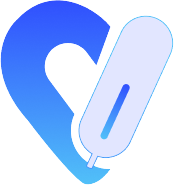
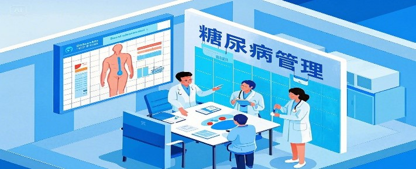

糖尿病助手
了解糖尿病预防
健康饮食管理

科学血糖监测
专业医师团队
更多
张伟明
内分泌科
主任医师
立即咨询
李雅琴
内分泌科
副主任医师
立即咨询
王建国
内分泌科
主治医师
立即咨询
健康科普
更多
糖尿病患者的饮食管理指南
科学的饮食控制是糖尿病管理的重要环节，合理搭配食物，控制总热量摄入...
1.2万
适合糖尿病患者的运动方式
适量的运动有助于血糖控制和身体健康，选择适合自己的运动方式很重要...
8,500
血糖监测的正确方法
掌握正确的血糖监测技巧对病情控制至关重要，了解不同时间点监测的意义...
6,300
了解糖尿病
查看全部
1型糖尿病
胰岛素依赖型糖尿病
2型糖尿病
最常见的糖尿病类型
妊娠糖尿病
孕期发生的血糖异常
其他类型
特殊类型的糖尿病
首页
方案定制
生活习惯
A助手
个人中心